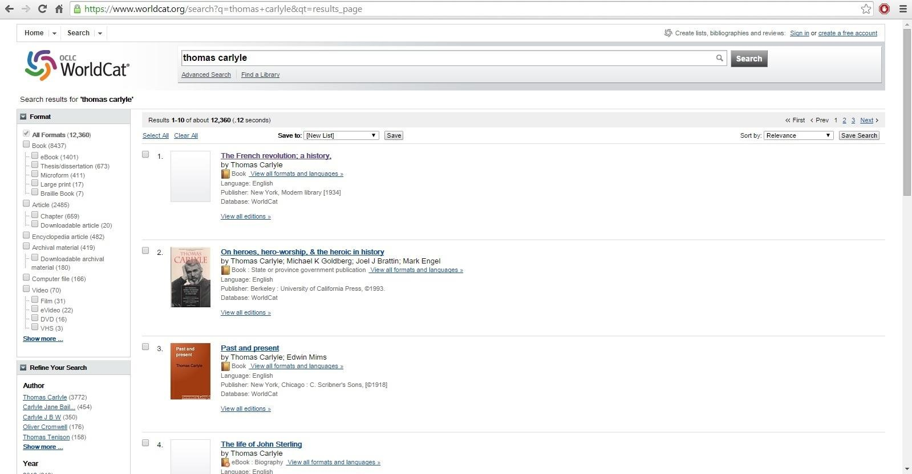
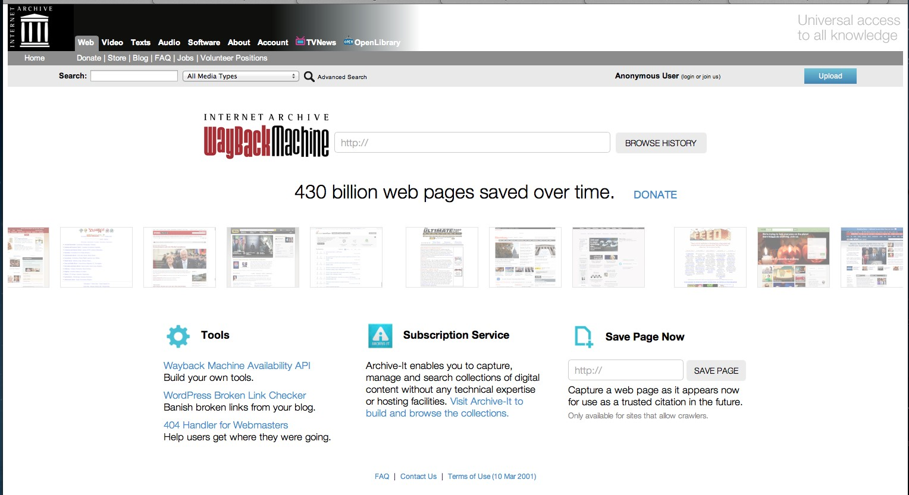

In the valley of the giants: 10 search services to use instead of Google
1. Yelp.com
This website is a crowd-sourced local business review and social networking site. At yelp.com, whenever you input an address or use location service to drop pins, it will help people find the most comprehensive list of local business information and user posted reviews about those store. In a specialty search service perspective, people use yelp to find restaurants around any location, and reviews help users know the cuisine type of restaurants, spending level, popularity, location and other services. Yelp performs as a search engine of local business.

2. Linkedin.com
This website is a user profile networking site, helping people build professional connections and find jobs. For corporate owners, it allows them to post jobs and positions, and use the search function to find the best candidates. In a specialty search service perspective, it provides search services including people’s profile, corporate introductions, jobs listins, and availble positions.

3. Autotrader.com
This website is online car trading platform, helping consumers buy cars, sell cars, or research car purchases. For those looking to buy a car, the site offers lists of new and used vehicles for sale from dealers and private sellers. In a specialty search service perspective, Autotrader.com provide car trading information including car brands, prices, mileage, conditions, colors, and trading areas.

4. Panabee.com
Panabee.com is a business and domain search service for users looking to set up a website. By typing in two words Panabee will generate a list of domain name ideas, give users information about whether or not the domain is currently owned, and provide a link to a site to purchase the domain. Panabee also offers filters for different domain extensions and a list of similar words to help businesses decide on a final name.
5. Worldcat
Worldcat.org is an online library catalog of over 10,000 libraries worldwide. The website catalogs and is searchable by books, videos, articles, and CDs. In the advanced search features users are able to search with more context including year, format, language, content, and keywords. This website is primarily for students or those working within academic fields looking for research resources. Worldcat returns a list of local libraries that have the desired item.

6. Archive.org
Archive.org has a search feature called the Wayback Machine, which allows users to view archived web pages and navigate past versions of websites. The user searches a URL and is then provided with a list of possible dates from which to view the site. This can be both a useful tool to understand the history of the web’s devlopment and a means to find information and web pages that no longer exist.
